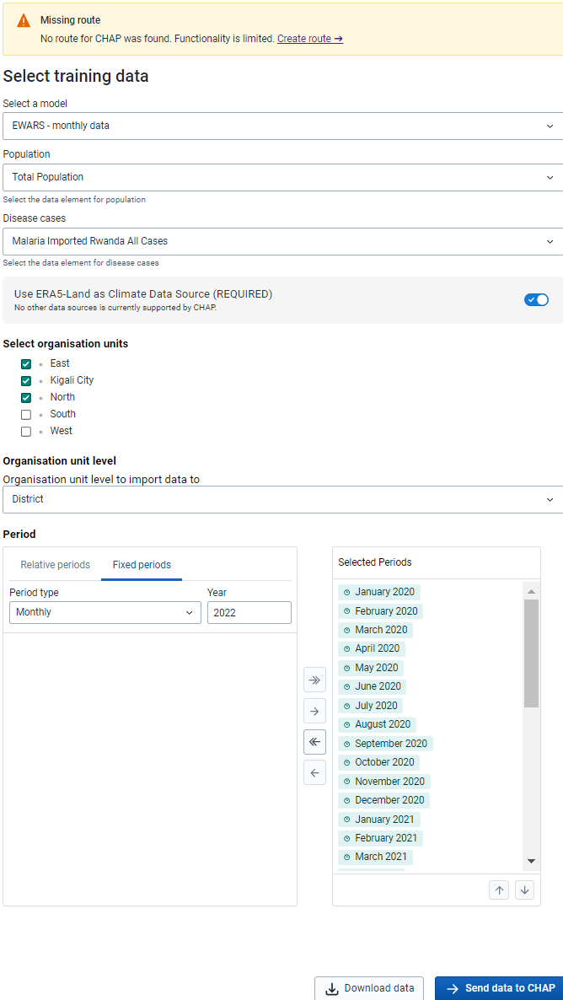

Prediction App¶
This page contains documentation on how to install and use Prediction App to create predictions. Prediction App enables integration between CHAP Core and DHIS2 (2.41+).
Click here if you are looking for Prediction App development documentation ➔
Requirements:¶
Access to credentials for Google Earth Engine. (Google Service Account Email and Private Key)
1. Ways of interacting with CHAP Core¶
Prediction App supports two ways of interacting with CHAP Core. This will further in this documentation be referred to as “Solution 1” and “Solution 2”. The solutions are as follows:
Solution 1: Download disease data from DHIS2 to use with CHAP Core CLI.
Solution 2: Use Prediction App to transfer data directly to CHAP Core’s REST-API
For both solutions, there are some common steps. We will go through this first.
2. Download Prediction App¶
You need to download the Prediction App as a ZIP file for installing it on your DHIS2 instance.
Download Prediction App from https://github.com/dhis2/prediction-app/raw/refs/heads/main/build/bundle/prediction-app-1.0.0.zip
Upload the ZIP file (Prediction App) to your DHIS2 instance (Learn how to install a custom DHIS2 app)
3. Starting REST-API and edit URL¶
3.1 Start CHAP Core with REST-API¶
First, go to CHAP Docker Compose documentation and follow the documentation for how to start CHAP Core with REST-API. Verify you have CHAP Core running, by visiting http://localhost:8000/docs, a Swagger page (REST-API documentation) should display.
3.2 Set CHAP Core URL¶
Next, the Prediction App needs to know which URL to use to communicate with CHAP Core. By clicking “Edit CHAP Core URL” located at the right side menu, a modal should display where you could set this setting.
Set this value to:
http://localhost:8000
After clicking “Save”, Prediction App would reload and start to fetch and send data to http://localhost:8000
4 Selecting prediction data¶
Find the Prediction App at your DHIS2 instance and open it
You can ignore the warning about “Missing Route”
You need to have the population registered for a minimum of one DHIS2 year period or one DHIS2 month period for each org unit in the selected training period.
Select only periods of the same type as the model supports. For example, “EWARS - monthly data” would only accept monthly data.
Ensure you have a DHIS2 data element for the disease data you want to make a prediction for.
You select which areas you want to create a prediction for in the “Select organization units” section.
“period” in the form, refers to the model’s training period, the prediction will be for three months. For instance, if you select all periods between January 2013 and August 2024, a prediction will be made for September 2024, October 2024, and November 2024.
Important about selecting period
If your primary goal is to predict the number of cases (rather than to evaluate models), make sure you select the most recent completed period up to today. CHAP Core does not account for specific dates and treats each month’s registrations equally. Therefore, it is crucial to ensure that the data you provide is complete. For example, if today’s date is the 15th, the data for the current month is likely to be incomplete because it won’t include information from the second half of the month. CHAP Core is not able to tell that the data belongs to an incomplete month and will count it as one full month of registration when it in reality is only 15 days. This will cause inaccurate predictions.
Below is an example of how a filled form could look like:

Click “Download data” if you chose Solution 1 (Download disease data from DHIS2 into a CHAP Core-supported format) and “Send data to CHAP ➔” if you chose Solution 2 (Use Prediction App to transfer data directly to CHAP Core’s REST-API).
Next, follow instructions for either “Solution 1” or “Solution 2”